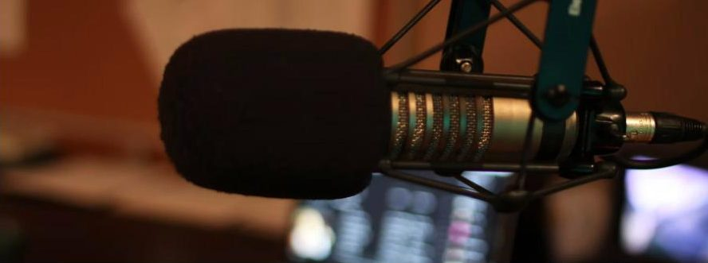

Apply for a free ad
Tell us a little about your group and the message you'd like people to hear. We air ads as sponsor funding comes in, and we work through applications in the order they arrive.
Questions people ask first
Is it really free?
Yes, all of it. You won't pay for the script, the recording or the airtime, because our sponsors cover the cost.
Who can get a free ad?
Nonprofits, volunteer groups and community projects are all welcome to apply.
Where does the ad play?
It plays on streaming radio stations, music apps and podcasts, and we aim it at listeners in your area. Each ad runs for two to four weeks.
When can we get ours?
We air ads as sponsor funding comes in, and we work through applications in the order they arrive. Applying now holds your place in line.
Can we use the ad anywhere else?
Yes. The finished ad is yours to keep, and you're welcome to post it on your website and social pages.